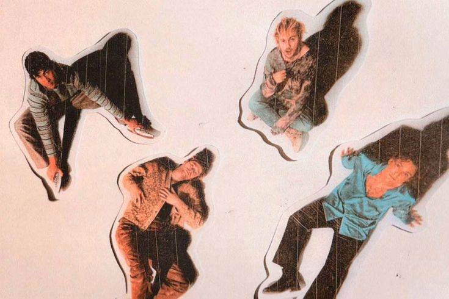

¿Quienes son?
5 Seconds of Summer (5SOS) es una banda australiana de pop-punk formada en Sídney en 2011. Está compuesta por Luke Hemmings (voz principal y guitarra), Michael Clifford (guitarra y coros), Calum Hood (bajo y coros) y Ashton Irwin (batería y coros).